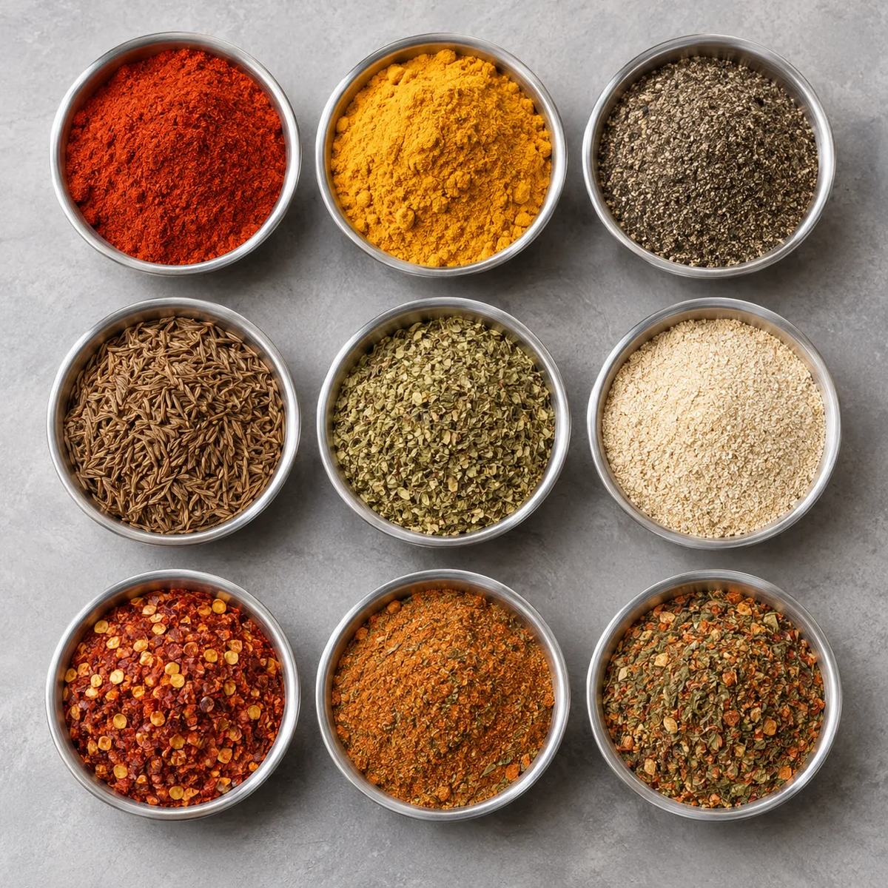
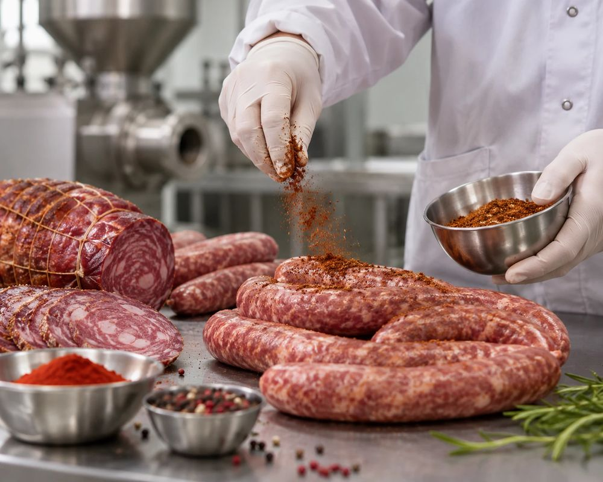

Sortiment pro potravinářskou výrobu
Od jednodruhového koření a sušených surovin po komplexní kořenicí a technologické směsi. Prozkoumejte náš sortiment nebo vám pomůžeme najít vhodné řešení.
Prozkoumejte náš sortiment
-

Koření a kořenicí směsi
Jednodruhové koření celé, drcené i mleté a kořenicí směsi podle vlastních receptur.
-

Sušené suroviny
Sušená zelenina v plátcích, kostkách, granulích i jako pudr, sušené houby a suché plody.
-

Směsi pro masnou výrobu
Kořenicí a technologické přípravky pro masný průmysl – kombi směsi, lakovací nástřiky a přísady.
Mimo jiné: kombi směsi, kořenicí směsi z přírodního koření, technologické přísady, technologické náhrady masa
-
Gastro a další produkty
Bujóny, polévky a omáčky, těstoviny, bramborové výrobky, škroby a další ingredience.
Katalog produktů
490 produktů
- Anýz
- Anýz mletý
- Badyán celý
- Badyán mletý
- Bazalka
- Bazalka mletá
- Bobkový list
- Citronová kůra - drcená
- Citronová kůra - mletá
- Citrónová kůra
- Fenykl celý
- Fenykl drcený
- Fenykl mletý
- Hořčice bílá celá
- Hořčice bílá drcená
- Hořčice bílá mletá
- Hřebíček celý
- Hřebíček mletý
- Chilli mleté
- Chilli papričky
- Jalovec
- Jalovec - mletý
- Kardamon mletý
- Kari lístky
- Kmín celý
- Kmín drcený
- Kmín mletý
- Kmín římský
- Kmín římský drcený
- Kmín římský mletý
Zobrazeno 30 z 490
Nevíte, který produkt je pro vás vhodný?
Naši specialisté vám pomohou s výběrem surovin, kořenicích směsí i s vývojem receptury na míru.